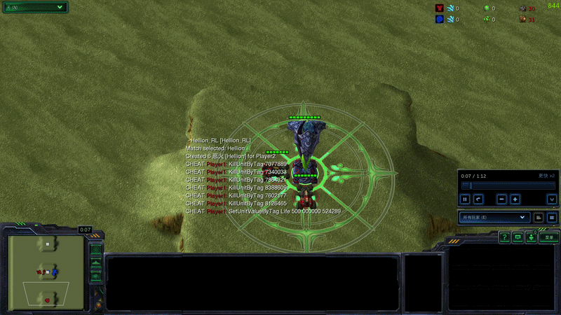
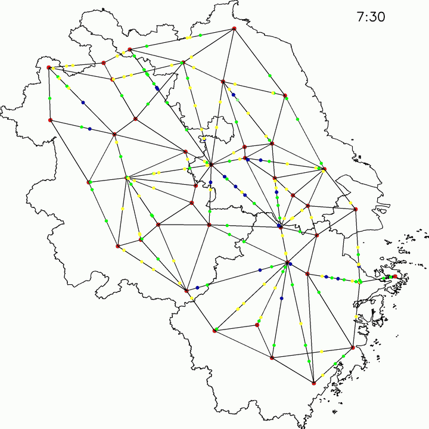
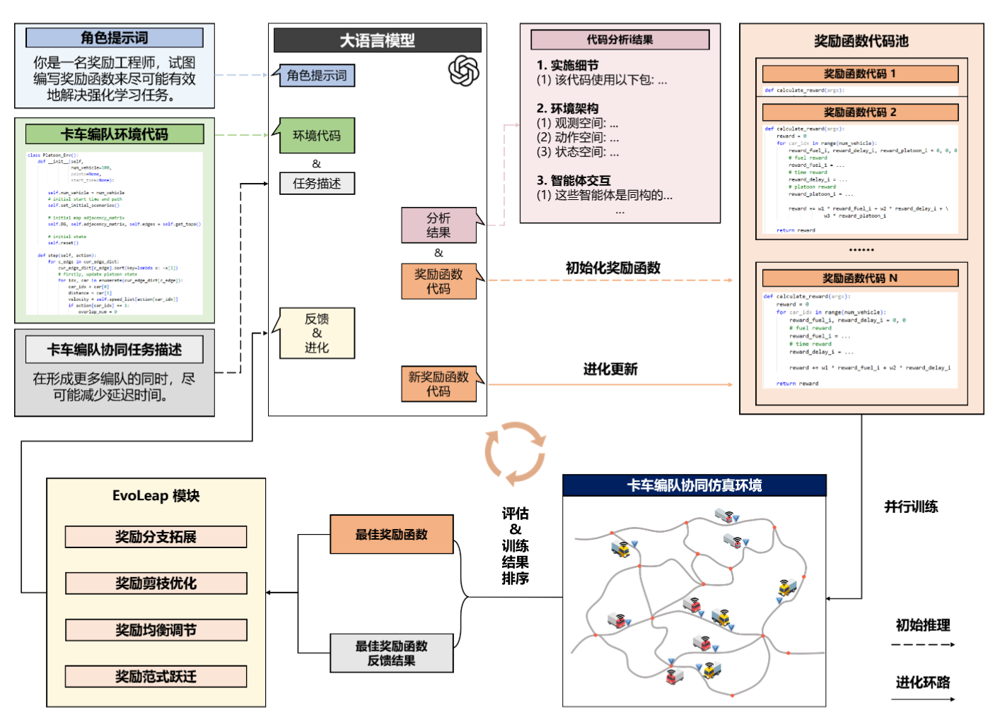
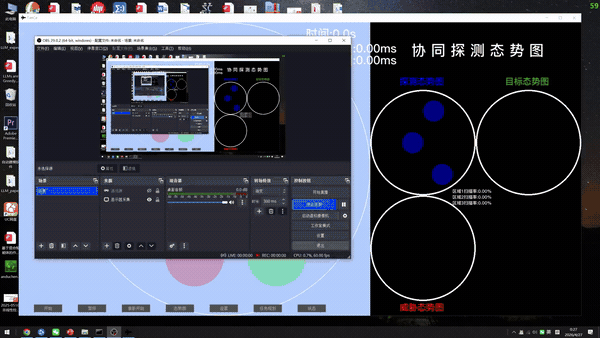
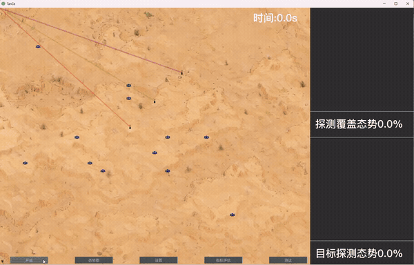
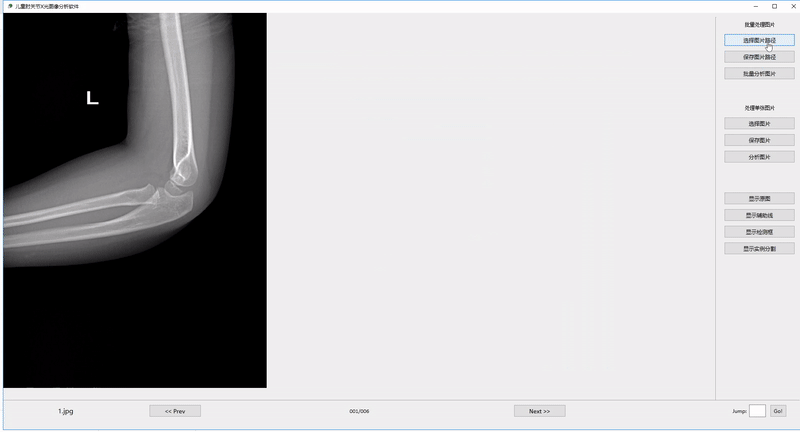

数学建模
把资源、信息与任务约束转化为序贯决策模型，明确状态、观测、动作、目标及智能体交互关系，为策略学习建立问题定义。
工作支撑：交通协同调度的 Dec-POMDP 建模；WL Game 的两阶段资源不对称博弈定义。
本人聚焦于如何通过强化学习提升智能体在复杂环境中的自主决策能力，尤其是多智能体协同、长时序规划与资源受限条件下的策略优化。
博士期间，围绕多智能体强化学习与 LLM Agentic RL，开展复杂决策建模、奖励自动设计及策略优化研究。曾在字节跳动 Infra 团队担任大模型训练系统与算法优化实习生，参与多模态大模型训练框架迁移、训练性能分析与效率优化，具备强化学习算法研究与大模型训练工程实践的双重背景。
自主智能无人系统全国重点实验室
智能科学与技术
预计毕业：2027年2月
电子信息学院
仪器科学与技术
电子信息学院
测控技术与仪器
数学建模、环境构建与算法设计，
通过训练评估与反馈迭代相互连接。
评估反馈用于修正模型假设、环境设置与算法设计。
把资源、信息与任务约束转化为序贯决策模型，明确状态、观测、动作、目标及智能体交互关系，为策略学习建立问题定义。
把数学模型落成可训练的交互环境，设计仿真逻辑、Agent 接口与评测协议，让算法能够反复试验，并在统一条件下比较。
针对部分可观测、多智能体协同与长时序信用分配等难点，设计策略架构和学习机制，通过对比与消融实验验证改进。
以深度强化学习为核心，
研究协同任务与对抗场景中的决策方法。
在大规模动态/信息不完全/资源受限的条件下，
如何让自主集群实现高效协同，并在动态环境中形成有效决策？

基于 StarCraft II 从零构建资源不对称的 WL Game 对抗评测环境，以战略—战术架构连接初始资源配置与动态执行；基于 VeRL 实现 SSA-GiGPO，优化长时序、稀疏反馈下的跨阶段对抗决策。

TA-QMIX / 交通协同构建长三角真实路网仿真平台，将速度规划与节点等待联合建模为 Dec-POMDP，以 TA-QMIX 学习协同调度策略。

PCRD / 方法框架以 LangGraph 构建任务理解、代码生成、并行训练与反馈进化闭环，在六类运筹优化场景中评估。
面向协同探测与动态博弈，
推进任务建模、仿真构建与策略优化。

项目主要负责人。构建任务数学模型与强化学习策略优化框架，研究探测模式与路径规划相互耦合条件下的联合决策。
示例测试中，区域覆盖率由 74.8% 提升至 100%，智能算法平均决策时间为 10.02 ms。

项目主要负责人。构建博弈对抗模型与仿真平台，研究博弈对抗场景下的多智能体协同智能化探测决策。
示例测试中，任务完成率由 74.11% 提升至 96.46%，增加 22.35 个百分点。
开发 MFU 与 Profiler 组件，定位训练瓶颈。
适配高效训练框架，验证 Loss 与评估指标。
适配 Attention 与融合算子，改善训练效率。
面向儿童肘关节 X 光图像，
研究实例分割、关键点检测与多任务学习。

硕士研究。构建 593 张影像的数据集，研究类别注意力实例分割与 Faster P-CNN 关键点检测，以多任务网络连接目标检测、骨骼分割与几何特征分析。
相较 HRNet，关键点总召回率由 47.81% 提升至 64.76%，直线平均偏移角由 6.33° 降至 1.87°。
欢迎就强化学习、多智能体系统与 LLM Agent 展开交流。